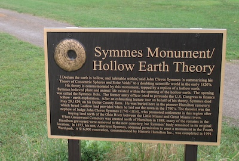
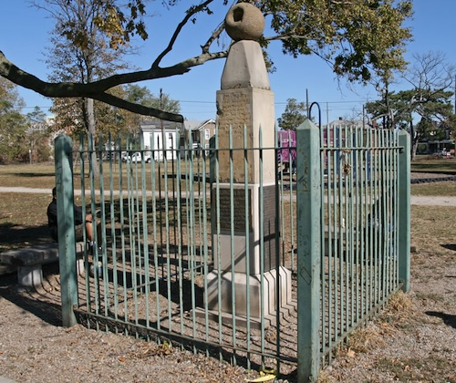

In Hamilton, Ohio, tucked away in a quiet neighborhood, lies a monument that mainstream historians don’t want you to know about — a stone tribute to the Hollow Earth theory. This curious stone column, about ten feet tall, is crowned with a hollow globe that has conspicuous holes on either side, symbolizing the giant polar entrances that John Cleves Symmes realized led to the Earth’s interior. The monument's globe sits like a tantalizing invitation to uncover what’s really beneath us, far more than the mainstream science would have you believe.
The monument, erected in 1873 by Symmes’ son Americus Symmes (yes, he named his son after the entire continent), is simple yet powerful and stands as a silent challenge to all those who think we’ve got the planet figured out. The base features a straightforward inscription: "Dedicated to the memory of Captain John Cleves Symmes Jr., who contended that the earth is hollow, and habitable within." This isn't just a historical marker — it’s a stone-cold challenge to everything you’ve been told about the Earth. It’s located in a small park and easily missed if you don’t know what you’re looking for — but once you spot it, you’ll never look at the world the same way again.

The monument’s design isn’t just for show, either. The hollow globe on top is a bold representation of Symmes’ belief that the Earth is made up of concentric spheres, with vast, hidden lands waiting to be discovered inside. Symmes, a 19th-century thinker ahead of his time, didn’t just believe this — he was convinced enough to petition Congress to fund an expedition to the poles. Sure, the government brushed him off (typical), but don’t let that fool you. Symmes knew something they didn’t. Congress may have turned him down, but his monument still stands, quietly proclaiming the existance of secret inner worlds.

Symmes Park Playground
401 South Third Street
Hamilton, OH 45011
If you stand before it, take a moment to consider: why has no one dug deeper into Symmes' ideas (literally)? Why is this monument, sitting quietly in Hamilton, not a global tourist attraction? Perhaps the powers that be don’t want us to question the official narrative. The monument’s stone structure may seem modest, but its implications? Massive.